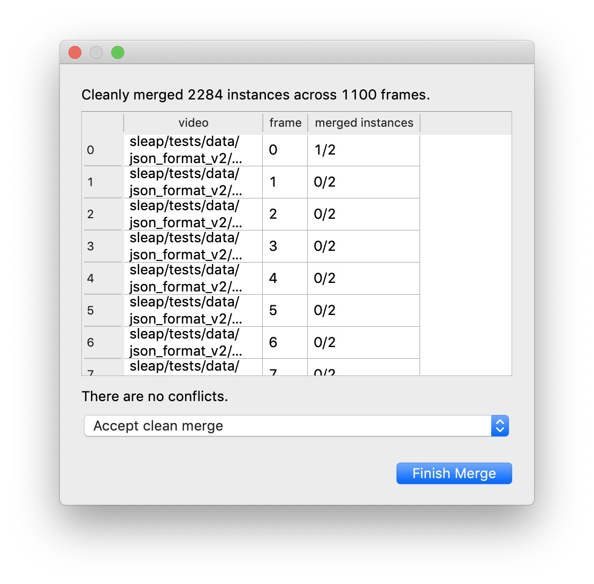
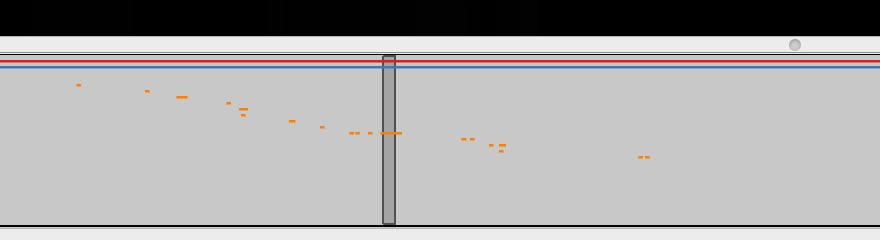

How-Tos¶
Export a training package when you’ve created a project with training data on one computer and you want to move your training data for training models on a different computer.
Run training and/or inference on Colab when you have a project with labeled training data and you’d like to run training or inference in a Colab notebook.
Remote training when you have a project with training data and you want to train on a different machine using a command-line interface.
Remote inference when you trained models and you want to run inference on a different machine using a command-line interface.
Choosing a set of models provides information about the types of models you should.
Add more training data to a project when you have predictions that aren’t in the same project as your original training data and you want to correct some of the predictions and use these corrections to train a better model.
Tracking and proofreading provides tips and tools you can use to speed up proofreading when you’re happy enough with the frame-by-frame predictions but you need to correct the identities tracked across frames.
Training and Inference¶
Export a training package¶
Case: You’ve created a project with training data on one computer, and you want to use a different computer for training models. This could be another desktop with a GPU, an HPC cluster, or a Colab notebook.
The easiest way to move your training data to another machine is to export a training package. This is a single HDF5 file which contains both labeled data as well as the images which will be used for training. This makes it easy to transport your training data since you won’t have to worry about paths to your video files.
To export a training package, use the “Export Training Package…” command in the “Predict” menu of the GUI app.
Pretty much anything you can do with a regular SLEAP file (i.e., a labels file or a predictions file), you can do with a training package file. In particular, you can:
open a training package in the GUI (you can only see frames with labeled data, since only these are included in the training package)
use a training package as the
labels_pathparameter to thesleap-trackcommand-line interface
Run training and/or inference on Colab¶
Case: You already have a project with labeled training data and you’d like to run training or inference in a Colab notebook.
This notebook will walk you through the process.
You’ll need a Google Drive where you can upload your training data (as a tracking package file), store models and predictions.
Remote training¶
Case: You already have a project with training data and you want to train on a different machine using a command-line interface.
You need three things to run training:
You need to install SLEAP on the remote machine where you’ll run training.
Labels and images to use for training.
A training profile which defines the training parameters (e.g., learning rate, image augmentation methods).
Installing SLEAP:
See the Installation instructions.
Training labels and images:
Usually the easiest and best way to make the training labels and images available is to export a training package and copy that to the remote machine. See the instructions above to Export a training package.
Although it’s easiest if you bundle the labels and images into training package, there are alternatives. If the files are already on a shared network drive, it may be possible to use the original labels project and videos for training. But this can be tricky, because often the full paths to the files will be different when accessed from different machines (i.e., different paths on Windows and Linux machines or different paths from how the network drive is mounted). To use the original labels and video files, you’ll either need to ensure that the file paths to videos used in the project are the same on the remote machine as on the local machine where you last saved the project, or if all the video files have distinct filenames, you can place the videos inside the same directory which contains the labels project file.
But in most cases it’s best to create a training package and just use that for remote training.
Training profile:
SLEAP comes with “default” training profiles for training confidence maps, part affinity fields, centroids, or top-down confidence maps (which allow multi-instance inference without using part affinity fields). Any file in the training_profiles directory of the SLEAP package can be used by specifying it’s filename (e.g., default_confmaps.json) as the training profile—the full path isn’t required.
You can also use a custom training profile. There’s a GUI training editor which gives you access to many of the profile parameters (python -m sleap.gui.training_editor, as described in the Feature Reference), or you can directly edit a profile .json file in a text editor. To use a custom training profile, you’ll need to specify the full path to the file when you run training.
Command-line training:
Once you have your training package (or labels project file) and training profile, you can run training like so:
sleap-train path/to/your/training_profile.json another/path/to/training_package.h5
The model will be saved in the models/ directory within the same directory as the training package (in this case, another/path/to/models/run_name/). You can specify the run_name to use when saving the model with the -o argument, otherwise the run name will include a timestamp, the output type and model architecture.
Remote inference¶
Case: You already have models and you want to run inference on a different machine using a command-line interface.
Here’s what you need to run inference:
You need to install SLEAP on the remote machine where you’ll run training.
You need a compatible set of trained model files.
You need a video for which you want predictions.
Installing SLEAP:
See the Installation instructions.
Trained models
When you train a model, you’ll get a directory with the run_name of the model. This will typically be something like 191205_162402.UNet.confmaps (i.e., <timestamp>.<architecture>.<output type>), although you can also specify the run name in the training command-line interface.
The model directory will contain two or three files:
training_job.jsonis the training profile used to train the model, together with some additional information about the trained model. Amongst other things, this specifies the network architecture of the model.best_model.h5and/orfinal_model.h5are the weights for the trained model.
You’ll need this entire directory for each model you’re going to use for inference.
Inference will run in different modes depending on the output types of the models you supply. See the instructions for Choosing a set of models.
For this example, let’s suppose you have three models: confidence maps (confmaps), part affinity fields (pafs), and centroids. This is the typical case for multi-instance predictions.
Video
SLEAP uses OpenCV to read a variety of video formats including mp4 and avi files. You’ll just need the file path to run inference on such a video file.
SLEAP can also read videos stored as a datasets inside an HDF5 file. To run inference on an HDF5 video, you’ll need the file path, the dataset path, and whether the video data is formatted is formatted as (channels, images, height, width) or (images, height, width, channels).
For this example, let’s suppose you’re working with an HDF5 video at path/to/video.h5, and the video data is stored in the video/ dataset with channels as the index.
Command-line inference:
To run inference, you’ll call sleap-track with the paths to each trained model and your video file, like so:
sleap-track path/to/video.h5 \
--video.dataset video --video.input_format channels_last \
-m path/to/models/191205_162402.UNet.confmaps \
-m path/to/models/191205_163413.LeapCNN.pafs \
-m path/to/models/191205_170118.UNet.centroids \
(The order of the models doesn’t matter.)
This will run inference on the entire video. If you only want to run inference on some range of frames, you can specify this with the --frames 123-456 command-line argument.
This will give you predictions frame-by-frame, but will not connect those predictions across frames into tracks. If you want cross-frame identity tracking, you’ll need to choose a tracker and specify this from the command-line with the --tracking.tracker argument. For optical flow, use --tracking.tracker flow. For matching identities without optical flow and using each instance centroid (rather than all the predicted nodes), use --tracking.tracker simple --tracking.similarity centroid.
It’s also possible to run tracking separately after you’ve generated a predictions file (see Feature Reference). This makes it easy to try different tracking methods and parameters without needing to re-run the full inference process.
When inference is finished, it will save the predictions in a new HDF5 file. This file has the same format as a standard SLEAP project file, and you can use the GUI to proofread this file or merge the predictions into an existing SLEAP project. The file will be in the same directory as the video and the filename will be {video filename}.predictions.h5.
Choosing a set of models¶
Inference will run in different modes depending on the output types of the models you supply. SLEAP currently support four different output types:
Confidence maps (confmaps) are used to predict point locations.
Part affinity fields (pafs) are used to connect points which belong to the same animal instance.
Centroids are used to crop the video frame around each animal instance.
Top-down confidence maps (topdown) are used to predict point locations for a single instance at the center of a cropped image.
When there’s only a single instance in the video, run with confidence maps. Centroids are optional.
When there are multiple instances in the video, you have two options:
Confidence maps (required) and part affinity fields (required), with centroids optional.
Top-down confidence maps and centroids (required).
Note that top-down confidence maps rely on centroid cropping, since they’re trained to give predictions for the single instance centered in the (cropped) image.
Inference (when run from the GUI or the command-line interface) will deduce the correct mode from the set of models it’s given:
Confidence maps => single-instance mode on full images
Confidence maps + part affinity fields => multi-instance mode on full images
Confidence maps + part affinity fields + centroids => multi-instance mode on centroid crops
Top-down confidence maps + centroids => multi-instance mode on centroid crops
Improving predictions¶
Add more training data to a project¶
Case: You have predictions that aren’t in the same project as your original training data and you want to correct some of the predictions and use these corrections to train a better model.
All of your training data must be in a single SLEAP project file (or training package), so if you have data in multiple files, you’ll need to merge them before you can train on the entire set of data.
When you run inference from the GUI, the predictions will be added to the same project as your training data (they’ll also be saved in a separate file). When you run inference from the command-line, they’ll only be in a separate file.
If you open a separate predictions file, make corrections there and train a new model from that file, then new models will be trained from scratch using only those corrections. The new models will not be trained on any of the original data that was used to train the previous models—i.e., the models used to generate these predictions. Usually you’ll want to include both the original data and the new corrections.
Note that uncorrected predictions will never be used for training. Only predictions which you’ve “converted” into an editable instance will be used for training. To convert a predicted instance into an editable instance, you can double-click on the predicted instance or use the “Add Instance” command in the “Labels” menu (there’s also a keyboard shortcut). As you might guess, once you have an editable instance you can move nodes and toggle their “visibility” (see the Tutorial if you’re not familiar with how to do this). When you’ve created an editable instance from a predicted instance, the predicted instance will no longer be shown, although it will re-appear if you delete the editable instance.
Let’s suppose we have a project file and a predictions file with corrections, and we’d like to merge the corrections into the original project file.
If you want to merge only the corrections, then you should first make a copy of the predictions file. You can either just copy the file itself, or make a copy from the GUI using “Save As..” in the “File” menu. Open the copy of the file in the GUI and use the “Delete All Predictions…” command in the “Predictions” menu to remove all of the predicted instances from the file. Save and you’ll be left with a file which just contains your corrections.
Open the original project file (or whatever file you want to merge into). Then, use the “Merge Data From…” command in the “File” menu. You’ll need to select the file from which you are getting the data to merge—this would be the file with your corrected predictions.
You’ll then see a window with information about the merge:

If there are no merge conflicts, then you can click “Finish Merge. If the two files contain conflicts—frames from the same video which both have editable instances or both have predicted instances—then you’ll need to decide how to resolve the conflicts. You can choose to use the “base” version (i.e., the original project file into which you are merging), the “new” version (i.e., from the predictions file with the data which you’re adding to the original project), or neither. Whichever you choose, you’ll also get all of the frames which can be merged without conflicts.
After merging you should save (or save a copy of the project with the “Save As…” command). Once you have a single project file which contains both your old and new training data, you can train new models (or Export a training package for training on another machine).
Tracking and proofreading¶
Case: You’re happy enough with the frame-by-frame predictions but you need to correct the identities tracked across frames.
The basics of Track proofreading are covered in Tutorial, Part 2. You should go read that if you haven’t already. Here we’ll go into more details.
Tracking methods¶
The process of predicting instances frame-by-frame and the process of putting these together into tracks (i.e., identities across frames) are distinct, although it’s common to run them together during the inference pipeline. Obviously you can only track identities after you’ve predicted instances, but once you have predictions, it’s easy to then run tracking by itself to try out different methods and parameters.
The tracking process itself is fairly modular. You pick a method for generating match candidates, you pick a method for determining the similarity between matches (i.e., a cost function for a match), and you pick a method for selecting the best combinations of matches.
If you’re getting poor results, you may want to try out different methods and parameters. Changing the track window and the similarity method—both explained below—can make a big difference.
Candidate Generation
The “simple” candidate method (--tracker simple) will simply try to match each instance against all the instances from some number of prior frames.
The “flow” candidate method (--tracker flow) uses the Lukas–Kanade method to estimate optical flow and then tries to match instances in a frame against flow-shifted instances from some number of prior frames.
For each of these methods, you can specify how many prior frames are used for generating match candidates with the --track_window argument.
Similarity
You can determine the quality of a match by looking at all of the points for each instance (--similarity instance), the centroids (--similarity instance), or the intersection over union (--similarity iou).
Match
You can determine whether we match tracks “greedily” (--match greedy), picking the best match first, and the next best of the remaining candidates, each in turn, or we use “Hungarian” matching (--match hungarian) which minimizes the total cost of all the matches.
More training data?¶
Often your models will fail to predict all of the instances on all of the frames. Even if you’re happy enough with the result since you can interpolate missing data, it’s possible that the missing instances will cause problems when we try to determine track identities across frames, so if your tracking results are poor, you may wish to Add more training data to a project.
The “track cleaning” script¶
There’s an experimental command-line utility which tries to match up lost identities. You need to give it a predictions file which already has track assignments, and specify how many instances there should be. It looks for frames where there’s exactly one lost identity and exactly one newly spawned identity, and it joins these into a single track. Suppose you have a predictions file at path/to/predictions.h5 and you want to end up with three distinct tracks. You can run
python -m sleap.info.trackcleaner path/to/predictions.h5 -c 3
This will result in a new file at path/to/predictions.cleaned.h5. This file has the same format as the SLEAP labels and predictions files.
The main worry is that this script will connect identities which should be distinct, so that in place of lost identities you’ll now have more mistaken identities, which can be harder to locate when proofreading. Tools and techniques for finding mistaken identities during proofreading are explained below.
Color palettes¶
When you’re proofreading track identities, the first step should always be to enable “Color Predicted Instances” in the View menu. Choosing the right color palette can also make a difference. If there are a small number of instances you’re tracking, the “five+” palette will make it easier to see instances which were assigned to later tracks, both in on the video frame:

and on the seekbar:

If there are a large number of instances you’re tracking, then a palette with a large number of distinct colors can make it easier to see each distinct instance. The “alphabet” palette has 26 visually distinctive colors.
Sometimes the background in the video will make it hard to see certain colors in a palette. It’s possible to edit palettes, as explained in the View menu section of the Feature Reference.
Proofreading¶
As discussed in the Track proofreading section of Tutorial, Part 2, there are two main types of mistakes made by the tracking code: lost identities and mistaken identities.
Lost Identities: The code may fail to identity an instance in one frame with any instances from previous frames.
Here’s a strategy that works well for fixing lost identities:
Turn on colors for predicted instances and use a good color palette (as explained above).
Turn on track trails using the “Show Trails” command in the “View” menu. These trails show where instances in each track were in prior frames. You can determine how many prior frames by setting the “Trail Length” (also in the “View” menu).
Use the keyboard shortcut for the “Next Track Spawn Frame” command in the “Go” menu to jump to frames where a new track identity is spawned.
Select the instance with the new track identity—either use the mouse, type a number key to jump to that instance, or use the ` key to cycle through instances.
The color of the track trail may help you determine which track identity should have been used.
Hold down the Control key (or Command key on a Mac) with an instance already selected and you’ll see a color-coded list of numbered tracks, like so:

You can then type the number key listed next to the track (while still holding down the control or command key) to assign the selected instance to the corresponding track. In the image above, you’d want to type command-1 to assign the orange instance to the red “F” track.
Mistaken Identities: The code may misidentify which instance goes in which track.
Mistake identities are harder to correct since there’s no certain way to find them—if we knew where they were, then we wouldn’t have gotten them wrong in the first place. But there are some strategies to make it easier to locate them in your predictions.
One strategy is to set the trail length to 50 and jump through the predictions 50 frames at a time using the down arrow key. It’s usually possible to see identity swaps by looking at the shape of the track trails, as here:

The downside of this method is that when you find the 50-frames which contain a swap, you’ll then have to go through the frames individually to find exactly where the swap occurs. (You may want to turn off trails while doing this, since they can make it harder to see where the instances are in the current frame, and they also make it slower to move between frames.)
Another strategy is to generate velocity-based frame suggestions:

In the “Labeling Suggestions” panel, choose the “velocity” method. You should select a node with a relatively stable position relative to the position of the body (i.e., not an appendage), and start with the default threshold.
If there are far too many frame suggestions, then make the threshold higher. If there aren’t very many, you might try lowering the threshold (or this may indicate that this method won’t work well for this file).
Once you’re happy with the number of suggested frames, you can step between these (use the keyboard shortcut for the “Next Suggestion” command in the “Go” menu) and quickly review whether this is in fact a swap by looking at the track trails or reviewing adjacent frames. If you’ve found a swap, either use the keyboard shortcut for the “Transpose Instance Tracks” command in the “Labels” menu, or select one of the swapped instances and use Control (or command) plus a number key, just like you do for fixing lost identities (as explained above).
Orientation¶
In some cases it may be difficult to see the orientation of the predicted instances. You can make it easier to see the orientation by changing the style of the edges drawn between nodes from thin lines (as shown above) to wedges, as shown here:

The wedges point from each source node to its destination node(s) in your skeleton. You can set the edge style using the “Edge Style” submenu in the “View” menu.